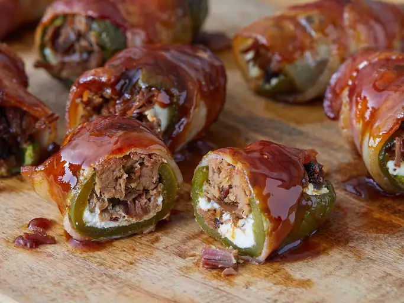

Texas Twinkies

Texas Twinky Jalapeno Poppers
A new take on the jalapeno popper
Bacon wrapped, beef filled, BBQ glazed, do we need to say more? Let's get cooking!
Ingredients
- 12 medium jalapeño peppers
- 12 tablespoons cream cheese, softened
- 1 ½ pounds cooked chopped brisket
- 12 slices thick-cut bacon
- kosher salt and ground black pepper to taste
- ½ (12 ounce) bottle BBQ sauce
Instructions
- Preheat the oven to 300 degrees F (150 degrees C)
- Slice jalapeños in the shape of a "T." Cut a straight vertical line from top to bottom with a crosscut
directly under the stem, making sure to cut only halfway through the jalapeños. Use a spoon to remove and discard
all seeds and membranes. Place jalapeños on a baking sheet.
- Bake in the preheated oven for 10 minutes.
- Transfer jalapeños to a bowl of ice water for a few minutes to extract the rest of the seeds' oil. Blot dry with a
paper towel.
- Increase oven temperature to 350 degrees F (175 degrees C).
- Spread 1 tablespoon cream cheese inside each jalapeño. Place about 2 ounces brisket inside each, then wrap with a slice
of bacon. Place poppers on a baking sheet and season with salt and pepper.
- Bake in the preheated oven for 30 minutes. Remove from the oven and brush the tops with BBQ sauce. Return to the oven and
bake 5 more minutes.
Back to Main
Source